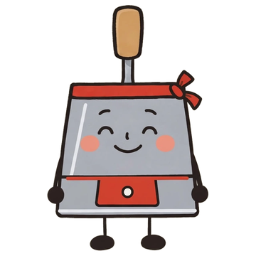
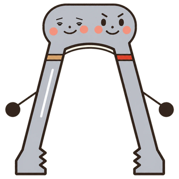

広島の、暮らしの小さな道具屋
毎日の「たいぎい」を、ひと手間ぶん減らす。

広島のお好み焼きで使うヘラ。おだやかで面倒見がよい。体が平たいので、すき間風が吹くと店の中をすーっと滑っていく。
日めくりカレンダー。品があり、几帳面。めくられる瞬間がくすぐったくて思わず笑い、あわてて口元を隠す。
名札。子どもの話になると止まらない。子どもの名前を覚えすぎて、仲間の名前をよく言い間違える。

トング。右の「とん」はしっかり者、左の「ぐう」はのんびり屋。2本そろわないと何もつかめないので、ぐうが寝坊すると、とんは朝のあいだ立っているだけ。
ひとてま堂は、広島市の公開データで市民向けのWebアプリを個人で作って公開している活動です。広島市の公式サービスではありません。店員たちは架空のキャラクターで、実際の店舗はありません。
© 2026 ひとてま堂｜最終更新：2026年11月